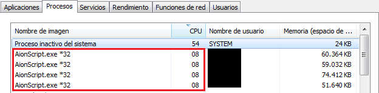

Page 1 of 2
Aion Script Cpu % use.
Posted: Thu Nov 02, 2017 10:47 am
by smaion40
Hello, today I was running multiple instances of Aion Script with different characters. I noticed AS is consuming about 8-10% of Cpu use even while its idle (not running any script), is this normal?. I even removed all the extensions except Cheating2.dll but the cpu is still the same. Any ideas of why is this happening and if there is a way to reduce consumption at minimum?. Thank you.

Re: Aion Script Cpu % use.
Posted: Thu Nov 02, 2017 2:59 pm
by cooco
Reboot system solve problem
Re: Aion Script Cpu % use.
Posted: Thu Nov 02, 2017 3:42 pm
by Boo
radar functions works all the time, thats why
AS needs info from the game 100% of the time, it uses loop with minimal timings delay.
Re: Aion Script Cpu % use.
Posted: Thu Nov 02, 2017 10:49 pm
by smaion40
cooco wrote: ↑Thu Nov 02, 2017 2:59 pm
Reboot system solve problem
I restarted my system many times but the cpu consumption is the same

Boo wrote: ↑Thu Nov 02, 2017 3:42 pm
radar functions works all the time, thats why
AS needs info from the game 100% of the time, it uses loop with minimal timings delay.
Oh

, It would be really awesome to have an option to deactivate these functions (Say, click for light mode - low end PCs), anyway radar/entities is mostly used during PvP, but not inside PvE instances, so it takes a bunch of resources unnecessarily.
To be honest, that's so far the only disadvantage I've ever found of AS, that Cpu consumption limits me to 4 simultaneous clients, 5 - 6 would bring system unstability, even tho my pc specs are really good. Other competitors consume low to no resources, that's why its only limited to how many Aion clients you can run in your PC instead.
Its nice to know that's the reason. Thank you.
Re: Aion Script Cpu % use.
Posted: Fri Nov 03, 2017 12:02 pm
by cooco
Copy AS folder for pvp and pve, in pve folder delete extension

Re: Aion Script Cpu % use.
Posted: Fri Nov 03, 2017 1:00 pm
by smaion40
cooco wrote: ↑Fri Nov 03, 2017 12:02 pm
Copy AS folder for pvp and pve, in pve folder delete extension
Thanks cooco that's a good idea, I was deleting everything except Cheating2.dll, after deleting all the extensions it went to 1-2%, way better than the 8-10% I was having before

ohhh the possibilities...


Re: Aion Script Cpu % use.
Posted: Mon Dec 25, 2017 2:10 am
by Diavolakos
Wait a minute, if you delete all the extensions does it still work but you simply do not have shortcuts etc? Or do you still have the shortcuts but your simply cannot see the interface for that?
I am running up to 8 clients with Vanilla and that is because I can set the fps as low as I want with a Vanilla script.
With AS I could run 3~4 max, if I can make it run that low that will be a win win.
Re: Aion Script Cpu % use.
Posted: Mon Dec 25, 2017 1:55 pm
by cooco
If you delete ( or rename .dll to .dll0) extension is ignored but AS work perfectly. I suggest you to delete radar and entities extension if use bot.
Re: Aion Script Cpu % use.
Posted: Tue Dec 26, 2017 12:42 am
by Diavolakos
I am going to try it with luna script. Because with my rather good pc I could play 3 clients and 3 AS and my CPU woudl get marginal. If I opened mroe my chars would delay a lot and eventually die.
I'll give it a check, if this allows me to have all 7 accounts playing and botting that is a win situation.
Re: Aion Script Cpu % use.
Posted: Tue Dec 26, 2017 2:31 am
by cooco
try and let us know if work